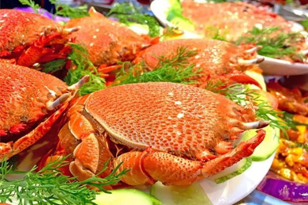
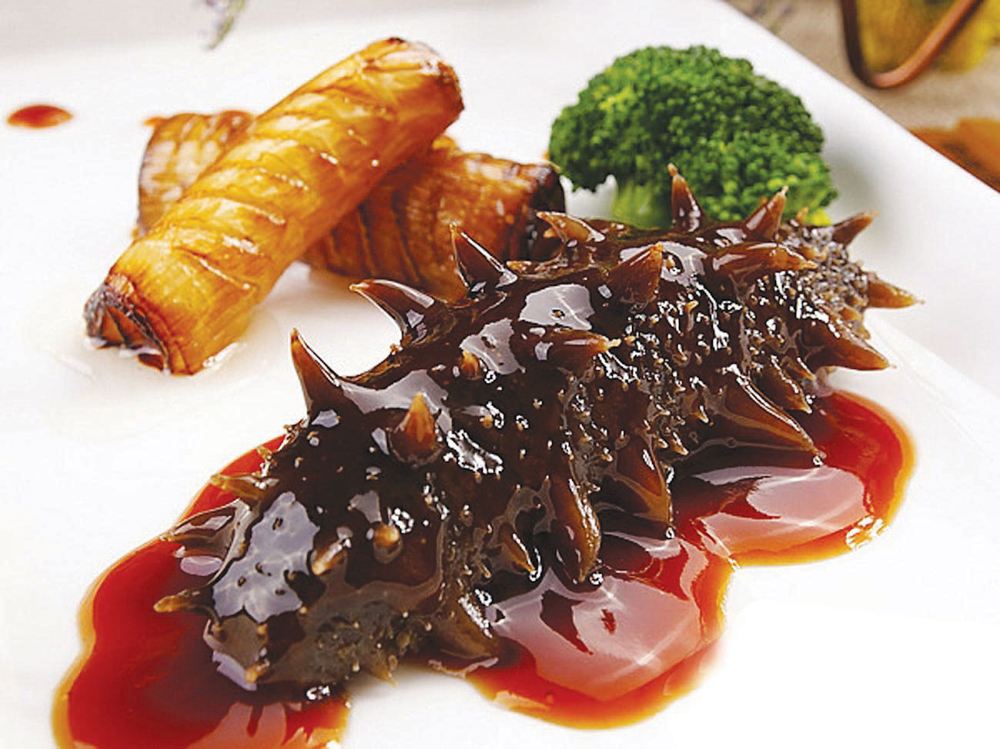
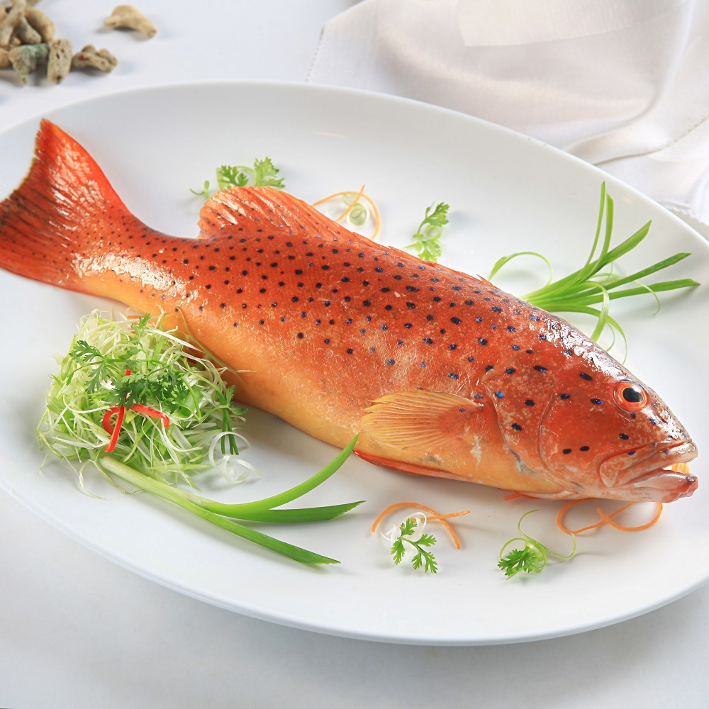

Món ăn nên thử
1. Cua huỳnh đế – đặc sản Phú Quý thịt chắc, ngọt, béo
Cua huỳnh đế là hải sản Phú Quý nổi danh gần xa về độ chắc thịt, thơm ngon. Được nuôi dưỡng trong môi trường biển trong, sạch do đó thịt cua huỳnh đế Phú Quý có màu trắng ngà đặc trưng, chắc, béo, có vị ngọt tự nhiên và giàu dinh dưỡng. Loài cua này có thể chế biến thành nhiều món như: nướng than, hấp, tuy nhiên ngon nhất vẫn là nấu cháo.
2. Hải sâm – hải sản cao cấp nên thử ở Phú Quý
Nhắc đến đặc sản Phú Quý thì chắc chắn không thể bỏ qua hải sâm. Hiện nay tại đảo có khoảng 100 loài hải sâm, tuy nhiên chủ yếu phân biệt được 10 loại chính. Hải sâm được xem là đặc sản quý hiếm và đắt tiền. Không chỉ thơm ngon mà chúng còn chứa nguồn dinh dưỡng lớn. Khi chế biến hải sâm, người ta thường kết hợp với gà ác, thịt bồ câu, chân bò, móng heo… và không thể thiếu các vị thuốc bắc.
3. Cá mú đỏ thơm ngon, đậm vị biển
Du lịch đảo Phú Quý mà không thưởng thức món cá mú đỏ thơm ngon thì chuyến food tour của bạn xem như chưa trọn vẹn. Được xem là loài cá hiếm và có giá trị vô cùng đắt đỏ, cá mú đỏ có thịt trắng, dai, ngọt, bề ngoài có lớp da đỏ vô cùng bóng bẩy. Cá mú đỏ ngon nhất là được hấp với gừng, hành bào và nước tương cho chín tới. Những thớ thịt cá trắng nhau, ngọt thơm, kết hợp với mùi cay nhẹ của gừng khiến thực khách ăn là “ghiền”.
Nơi lưu trú trên đảo
Trên đảo Phú Quý, dù chưa có sự hiện diện của khách sạn hoặc resort sang trọng, nhưng vẫn có rất nhiều nhà nghỉ và homestay đẹp cho du khách lựa chọn. Có nhiều khách sạn bình dân, nhà nghỉ như La Min, Hải Long, Phương Quyên, Hướng Dương, Nam An, An Phú… Ngoài ra, du khách cũng có thể lựa chọn homestay như Phú Liên, Villa Biển Xanh, La Isla Bonita… Giá trung bình cho một đêm lưu trú tại đảo Phú Quý dao động từ 300.000 – 500.000 đồng cho một phòng hai người. Tuy không quá xa hoa, nhưng những nơi lưu trú này đáp ứng đầy đủ các tiện nghi cần thiết và tạo ra một không gian thoải mái và ấm cúng để du khách nghỉ ngơi sau những hoạt động khám phá trên đảo.